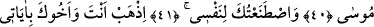
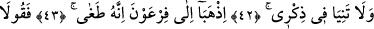
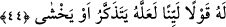

ONA YUMUŞAK
SÖZ SÖYLEYİN
40. Hani, kız kardeşin gidip “Ona bakacak birini size bulayım mı?” diyordu.
Böylece seni, gözü gönlü mutluluk dolsun ve üzülmesin diye annene geri verdik. Ve
sen, birini öldürdün de seni sıkıntıdan kurtardık. Seni iyiden iyiye denemeden
geçirdik. Bunun için yıllarca Medyen halkı arasında kaldın. Sonra takdire göre (bu
makama) geldin ey Mûsâ!
41. Seni, kendim için elçi seçtim.
42. Sen ve kardeşin birlikte âyetlerimi götürün. Beni anmayı ihmal etmeyin.
43. Fir’avn’a gidin. Çünkü o, iyiden iyiye azdı.
44. Ona yumuşak söz söyleyin. Belki o, aklını başına alır veya korkar.
“Hani kız kardeşin” Meryem “gidip…” Bu ifâde, Mûsâ (a.s.)’ın kardeşi Meryem’in
Fir’avn’un evine gittiği ve bundan sonra konuşulan sözleri, annesine geri dönmesini,
annesinin onu sevgi ve şefkatle terbiye etmesini içine alır. Bu, “gözümün önünde
yetiştirilmen için” âyetini, doğrular mâhiyettedir. Çünkü annenin şefkatinden daha
büyük bir şefkat yoktur.
Şeyhzâde der ki: “Mûsâ (a.s.)’ın yetişmesinin ve terbiyesinin, kız kardeşinin gitme
zamanına bağlanması doğrudur. Çünkü bu terbiye, kardeşinin gitmesi ve Mûsâ’nın
annesine döndürülmesi zamanında gerçekleşmiştir.
Fir’avn ve karısı Âsiye, Mûsâ’nın memesini kabul edeceği bir süt annesi ararken Hz.
Mûsâ’nın kız kardeşi onları görünce: Ey buradakiler! “Ona bakacak” yâni, onun
bakımını üzerine alıp onu terbiye edecek, ona süt verecek “birini size bulayım mı?
diyordu.” Bu ise Mûsâ’nın süt annenin memesini kabul etmesiyle olacaktı. Çünkü Mûsâ
o zamana kadar başka kadınların memesini kabul etmemişti.
Rivâyete göre Fir’avn âilesinin Nil nehrinden bir çocuk bulup aldıkları, bu çocuğun
hiçbir kadının memesini kabul etmediği için uygun bir kadın aramaya mecbur kaldıkları